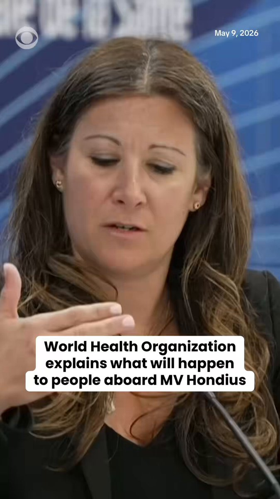
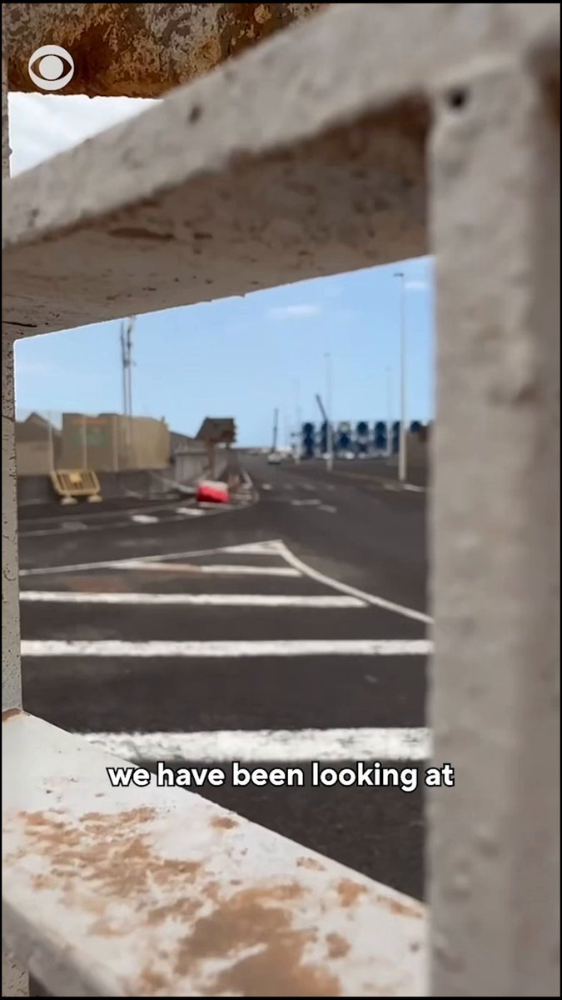
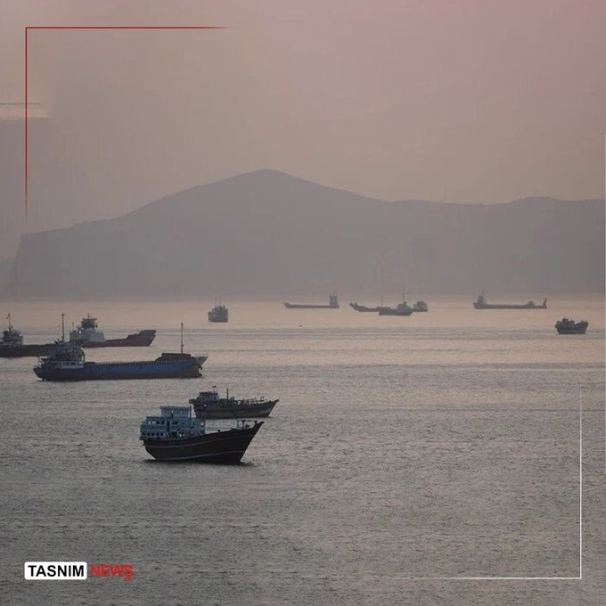

@Tasnimnews_Fa
📝 原文: IRGC Aerospace Commander: Aerospace missiles and drones are locked onto the enemy and awaiting the firing order.
🇨🇳 译文: 伊朗革命卫队航空航天指挥官：航空航天导弹和无人机已锁定敌人并等待发射命令。

🕒 2026-05-09T23:32:16+00:00
| 来源 | 旧窗口内数量 | 本次新增 | 本次淘汰 | 当前窗口内共有 |
|---|---|---|---|---|
| 推文 + Dawn 新闻 | 0 | 32 | 0 | 32 |
| ARY News | 0 | 0 | 0 | 0 |
注：淘汰数 = 旧窗口内数量 + 本次新增 - 当前窗口内共有







暂无文章。